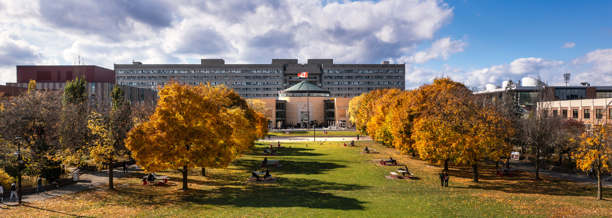

CSER 2025 Fall will be held and co-located with the IEEE CASCON 2025 conference at York University on November 10, 2025.
CSER brings together (primarily) Canadian-based software engineering researchers, including faculty, graduate students, industry participants, and any others who are interested.
| Deadline | |
|---|---|
| New Faculty Proposal submission | October 25, 2025 |
| Student Proposal submission | October 25, 2025 |
| Acceptance announcement | TBD |
| Early Registration For CASCON | October 20, 2025 (no more extensions) |
Reminder: For more details on co-located events and to register, please visit CASCON 2025 Registration website. You should at least register for the Monday of CASCON to attend CSER.
Trustworthy Testing for AI-Enabled and Deep Learning Systems
Talk Abstract: Testing is central to ensuring reliable software, but in AI-enabled systems not all failures point to real defects. Many arise from invalid inputs, nondeterminism, or flaky test outputs, especially in autonomous systems where virtually any environment factor can act as input. These challenges complicate the distinction between true defects and spurious failures, raising questions of validity and reliability. In this talk, I will present approaches to improve testing for deep learning and AI-enabled systems, including automated failure explanations, validation of vision-based test inputs, prediction of flaky tests, and bridging the real-to-synthetic gap in simulation-based testing. I will illustrate these solutions through case studies in cyber-physical systems, autonomous driving, and network systems.
Bio: Shiva Nejati is a Professor at the School of Electrical Engineering and Computer Science at the University of Ottawa, Canada. She co-founded and co-directs the university's Sedna IoT Lab. Her current research is in software engineering, focusing on software testing, the analysis of IoT and cyber-physical systems, search-based software engineering, model-driven engineering, applied machine learning, and formal and empirical software engineering methods. Her research is closely connected to industry, having worked with 16 companies across Canada, Europe, Asia, and the US. These collaborations have resulted in over 90 published papers in top-tier venues, earning her eight Best Paper and ACM SIGSOFT Distinguished Paper Awards, as well as a 10-Year Most Influential Paper Award. She has served as a Program Co-Chair for four international conferences: SEAMS 2025, ICST 2024, MODELS 2021, and SSBSE 2019, and she will serve in the same role for ASE 2026. She is an elected at-large member of the IEEE TCSE Executive Committee (ExCom) and was an Associate Editor for IEEE TSE from 2019 to 2024.
Website: Personal Website
Beyond Correctness in LLM-Generated Code
Talk Abstract: Large language models (LLMs) are rapidly transforming the practice of software engineering. Code correctness has been the primary benchmark for evaluating these models, but real-world software development requires much more. In this talk, I will discuss how we could move beyond correctness to address broader dimensions of LLM-generated code. I will use my recent work on code efficiency, fairness, and diversity as examples, and discuss the challenges and opportunities that lie ahead in advancing LLMs for code.
Bio: Dr. Jie M. Zhang is a lecturer of computer science at King's College London. Her main research interests are the trustworthiness of software engineering, AI, and LLMs. She has published numerous papers in top-tier venues including ICML, ACL, NeurIPS, ICLR, ICSE, FSE, ASE, ISSTA, TSE, and TOSEM. She is a steering committee member of conferences IEEE ICST and ACM AIware. She is the general chair of AIware 2025, the area chair of ICSE 2026 and ASE 2025, and the program chair of many events such as AIware 2024, Internetware 2024, and ISSTA 2025 Doctoral Symposium.
Over the last three years, she has been invited to give over 30 talks at conferences, universities, and IT companies. In recognition of her influence, she was named one of the Top 15 Global Chinese Female Young Scholars in Interdisciplinary AI (2023). Her research has won the FSE 2025 distinguished paper award, the 2022 IEEE Transactions on Software Engineering Best Paper award, and the ICLR 2022 spotlight paper award. She is also the winner of the 2025 ACM Sigsoft Early Research Award, one of the most prestigious honours for early-career researchers in the software engineering community.
PDF version of the program CSER 2025 Fall Program
Details of invited new faculty talks will be announced soon.
Panel details will be announced soon.
Tutorial details will be announced soon.
Research talk details will be announced soon.
Poster and demo details will be announced soon.
Dear CSER Community,
The new version of CSER is just around the corner! For CSER 2025 Fall, we are soliciting proposals for our “New Faculty Talks” series, where newly hired faculty members will introduce themselves, share their research, and engage with the community. Each talk will last 20 minutes, followed by a brief Q&A session. Please note that all talks will be held in-person.
The New Faculty Talks will be co-located with CASCON and held on November 10, 2025. This is an excellent opportunity to present your work to a broader audience and foster collaboration. For more details on co-located events and to register, please visit CASCON 2025 Registration website. To attend CSER, you must at least get a single-day ticket at CASCON. That ticket should allow you to attend the Monday session of CASCON.
If you are a newly hired faculty member, please submit your details including:
Please complete the Faculty Talk Proposal Form by Saturday, October 25, 2025. After the submission deadline, we will follow up with further details regarding the schedule and presentation format.
If you know of any newly hired faculty members who might be interested, please forward this invitation to them or contact us directly.
We look forward to your participation!
Program Chairs,
Alvine Boaye Belle (YorkU)
Arik Senderovich (YorkU)
Dear CSER Community,
The new version of CSER is just around the corner! As usual, we invite students to showcase their research at CSER 2025 Fall by delivering a 10–15 minute talk or presenting a poster/demo, depending on the number of participants.
This is a fantastic opportunity to gain presentation experience and connect with the CSER and CASCON communities. The event will be co-located with CASCON on November 10, 2025, offering a unique chance to engage with a broader audience and foster collaboration. For more details on co-located events and to register, please visit CASCON 2025 Registration website. To attend CSER, you must at least get a single-day ticket at CASCON. That ticket should allow you to attend the Monday session of CASCON.
For your submission, please include:
Please submit your proposal using the Student Presentation/Poster Proposal Form by Saturday, October 25, 2025. We will provide the final schedule and additional presentation details after the submission deadline.
Faculty members, please encourage your students to participate!
We look forward to your innovative submissions!
Program Chairs,
Alvine Boaye Belle (YorkU)
Arik Senderovich (YorkU)
This year, CSER is co-located with CASCON and held on November 10. This is an excellent opportunity to present your work to a broader audience and foster collaboration. For more details on co-located events and to register, please visit CASCON 2025 Registration website. You should at least register for the Monday of CASCON to attend CSER.